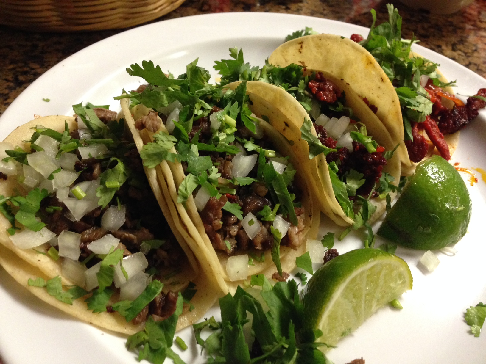

Tacos de fajita.

Description
In comparison to other food recipes, tacos seems to have a really small one which is great.
It all just means its a simple food to make.
Ingredients:
- Tortilla
- Meat (Fajita)
- Condiments (Salsa, cilantro, sliced onion, etc)
Steps:
- Cook your meat/fajita well.
- Once your meat is cooked, start heating up tortillas.
- Place heated tortillas on plate and place the meat on the tortilla.
- Fold to a taco-shape and add condiments to your liking.
- Enjoy!